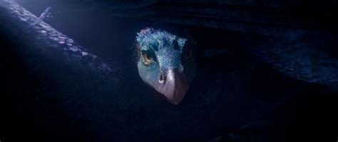

뒤로 가기

공간의 크기에 따라 몸을 줄였다 늘였다 할 수 있으며 청록색의 아름다운 외피가 인상적인 동물. 뱀의 몸통에 새의 깃털과 날개, 그리고 부리를 지니고 있다.
극동과 인도지방에 서식하며, 육식성이라 뱀과 쥐를 잡아먹고 때로는 원숭이도 잡아먹는다고 한다. 영화 신비한 동물사전에서의 모습을 보니 벌레도 잡아먹는 듯 하다.
알껍데기가 은으로 되어있으며 이 때문에 밀렵꾼들에게 표적이 된다고 한다. 은행에서 제이콥과 뉴트 스캐맨더가 한 자리에 앉아 있었는데 니플러를 발견한 뉴트가 오캐미의 알 하나를 흘리고 가는 장면이 첫 등장이다.
뉴트 일행이 오캐미를 잡기 위해 바퀴벌레로 유인해서 주전자 안으로 집어넣는 방법을 썼다.후반에는 뉴트가 오캐미의 은 알껍데기 다량을 제이콥에게 은행 담보물로 사용하라며 주게 된다.